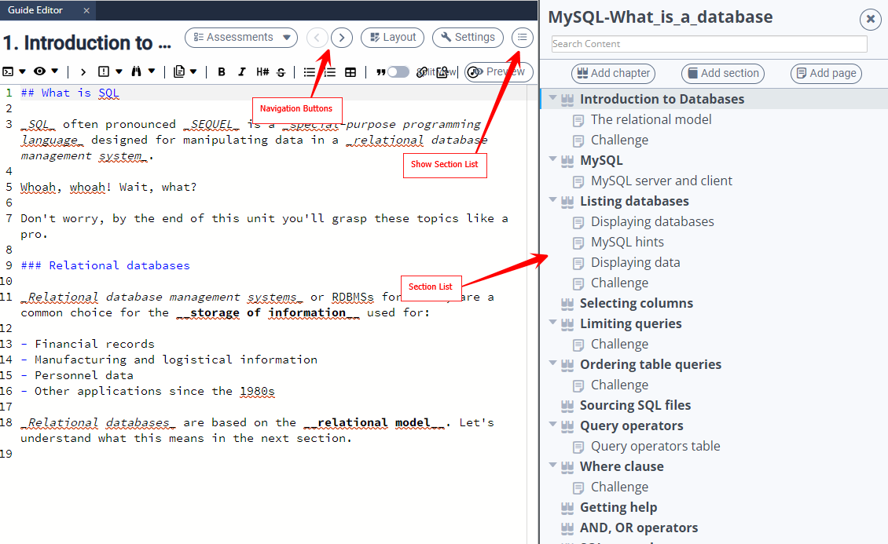
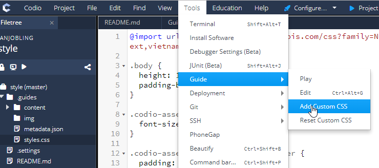
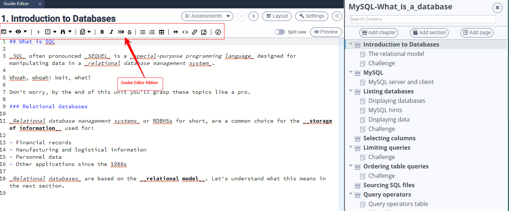
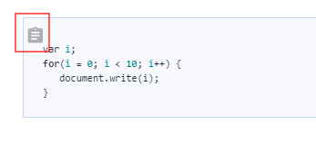
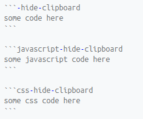
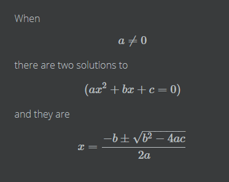
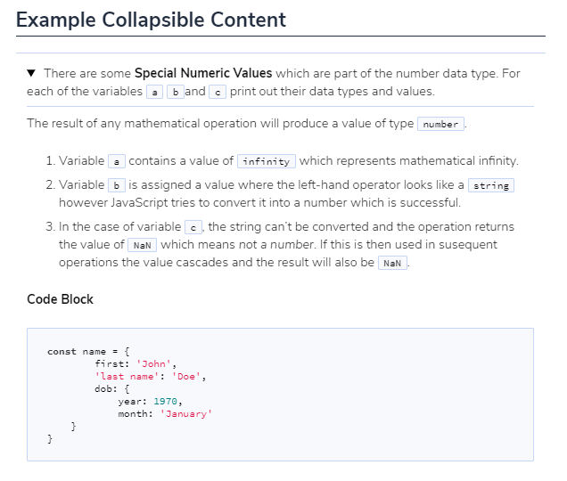

Markdown content editing¶
Content can be written in
Markdown - Markdown is a lightweight markup language that you can use to add formatting elements to plaintext text documents. More information below.
HTML - Hypertext Markup Language allows more detailed control of your formatting. More information can be found here.
When you are in edit mode, you can select a section by
using the navigation buttons in the header area
selecting a section from the index list

Renaming the Section¶
Rename your section by clicking on the section title in the header area.
Writing content¶
Write content in the main content area.
You can also set hotkeys for a range of commonly used editing functions.
Bold selected text
Enumerate selected text
Order selected text
Make selected text as a code block
Command button
See the [guides] area in the User Preferences
Custom CSS¶
In Play Mode or as you preview, your content is rendered as students will see it. You can override the default CSS styling by accessing Tools->Guide->Add Custom CSS

‘Reset Custom CSS’ will restore the default CSS styling
Click here for details on how to insert images, videos and hyperlinks.
Markdown¶
To assist with your creation of markdown content, an editor ribbon is available, including Codio specific buttons to open/close content within Guides.

If you prefer to write markdown yourself, a summary of formatting codes:
Headers/Titles¶
To display a header or title, you can use the # character at the start of the line. The more # characters you add, the smaller the font.
# Big title
## Smaller title
### Even smaller title
#### etc.
Bold and Italic¶
To create bold or italic text, you use ** and * either side of the respective words.
I want to say that **this is really important**, you know
I *really* like chocolate
Bullet Lists¶
To create a list of bullet points, you start the line with a -
- Bullet 1
- Bullet 2
- Bullet 3
- etc
Numbered Lists¶
To create a numbered list, you start the line with a 1. The numbers are automatically calculated for you.
1. Item 1
1. Item 2
1. Item 3
1. etc
Code Blocks¶
If you want to show some code, styled with the courier font, in a box and with syntax highlighting applied you surround your code block with three backticks. For example, the following javascript snippet
var i;
for(i = 0; i < 10; i++) {
document.write(i);
}
is written with the first line as
`` `js
then your code, and the last line as three backticks
Note that you can specify a language type after the top 3 back ticks. Entering python after the backticks would apply syntax highlighting for python. Many languages are supported. See a full list of supported languages here. You should search for your language and then use the alias shown.
The Code block also includes a ‘copy to clipboard’ button to allow students to easily copy the code to their clipboard where you may want them to run this code in the assignment

If you wish to suppress the ‘copy to clipboard’ button in the code block, append `-hide-clipboard` to the first line
Example

Code Segments¶
If you want to insert a piece of code inline with the rest of your text, then you use a single ` (backtick) character either side of the text. For example,
We can define a variable var x; if we like
… is written in markdown as
We can define a variable `var x;` if we like
Indented Lists¶
If you want to indent a list, then indent just 2 spaces and it will indent.
- Bullet 1
- Bullet 2
- Bullet 3
- etc
Callout Blocks¶
If you want to show a callout block a number of options are available and others can be easily added if required
important
info
warning
topic
definition
challenge
guidance
meetup
hackathon
create
calendar
growthhack
xdiscipline
debugging
e.g.
|||info
# My Title
Some text
|||
.. image:: /img/guides/callout_info.png
:alt: calloutinfo
The Guidance callout block is only visible in play mode to designated teachers within a course. It is not visible for students.
Hyperlinks, Images, Videos & iframes¶
We describe these in this section.
HTML¶
You can include HTML tags
Latex / MathJax¶
Latex is supported using MathJax. For example
When $a \ne 0$ there are two solutions to $(ax^2 + bx + c = 0)$ and they are $x = {-b \pm \sqrt{b^2-4ac} \over 2a}$
and for multiple lines we do the following
$$
y=x^2
y=\frac{x^2}{x+1}
$$
Click here for more details on Latex and Mathjax.

Inline math equations are encapsulated in a single $ like this: $omega = dphi / dt$.
Collapsible Content¶
In writing content, it is sometimes useful to provide information for the student, but to keep it hidden until they are ready.
This can be achieved with collapsible content and the <details> <summary> elements. The content is treated as HTML and as such a mix of HTML and Markdown can be required.
Note
If you have code blocks you must have an empty line after the closing
</summary>tag.All code block starter lines, e.g. ```js must be preceded by a blank line.
The closing block ``` tag must be followed by a newline.
If you have multiple collapsible sections you must have an empty line after the closing
</details>tag.If you want the content to show by default, use <details open>.
Example¶

The following is the code used to create the image above. Three code blocks are required for this display.
###Example Collapsible Content
<details><summary>
There are some <b>Special Numeric Values</b> which are part of the number data type. For each of the variables <code>a</code> <code>b</code>and <code>c</code> print out their data types and values.
</summary><hr>
The result of any mathematical operation will produce a value of type `number`.
1. Variable `a` contains a value of `infinity` which represents mathematical infinity.
2. Variable `b` is assigned a value where the left-hand operator looks like a `string` however JavaScript tries to convert it into a number which is successful.
3. In the case of variable `c`, the string can't be converted and the operation returns the value of `NaN` which means _not a number_. If this is then used in subsequent operations the value cascades and the result will also be `NaN`.
<h6>Code Block</h6>
```js `
const name = {
first: 'John',
'last name': 'Doe',
dob: {
year: 1970,
month: 'January'
}
}
</details>